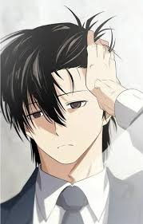

présentation de Lhistoire de The
Greatest Estate Developer
Suho Kim, un étudiant fauché qui peine à joindre les deux bouts, cherche désespérément à
changer de vie en obtenant un diplôme d'ingénieur civil.
Mais passer de la misère à la richesse sera plus facile à dire qu'à faire,
surtout après que Suho se soit soudainement réveillé dans le roman fantastique qu'il lisait
tous les soirs,
incarnant Lloyd Frontera, l'un des pires personnages secondaires.
Lloyd est un ivrogne paresseux et impétueux dont la famille est au bord de la ruine à cause
d'une dette colossale.
Lloyd n'est peut-être pas l'homme le plus fiable, mais Suho n'est pas prêt à abandonner si
facilement ; il refuse de retomber dans la pauvreté.
Heureusement pour la famille Frontera, Suho a un atout qui pourrait mettre fin à leurs
difficultés financières : ses études d'ingénieur civil !
Avec le cœur d'un entrepreneur et l'intelligence d'un ingénieur,Suho pourra-t-il enfin se
construire une vie meilleure ?
présentation de Kim Suho

Portrait kim suho
Lorsqu'il vivait en Corée du Sud, Suho semblait plutôt calme, travailleur et peu
conflictuel.
Il a étudié avec assiduité pour obtenir une bourse d'études en génie civil et a rejoint le
Club de recherche sur la construction traditionnelle, désireux d'apprendre tout ce qu'il
pouvait.
Conscient que les gens se moquaient de lui et l'insultaient dans son dos à cause de sa
situation, il n'a jamais rien répondu et s'est contenté d'écouter leurs paroles en silence,
dans l'espoir de sortir un jour de la pauvreté.
Ce genre de traitement l'a conduit à rejeter catégoriquement la compagnie et ses valeurs, la
considérant comme une source d'exploitation.
Malgré cela, Suho conserve une certaine sensibilité dans certains domaines, comme sa
famille, car il a dû perdre ses deux parents et son chien sans pouvoir lui dire au revoir.
Il éprouve un profond sentiment de culpabilité de n'avoir pas pu soutenir son père pendant
ses difficultés financières et de ne pas avoir traité son chien avec suffisamment d'amour
avant son décès.
présentation de lloyd frontera(Kim Suho)
portrait lloyd
Après avoir été transporté dans le corps de Lloyd Frontera, Suho hésite d'abord sur la
conduite à tenir avant de trouver un juste milieu entre ses propres vertus et la vie
antérieure de Lloyd.
Débrouillard et spirituel, Suho apprend rapidement à exploiter la réputation de voyou du
noble pour menacer et s'imposer des situations favorables, tant pour lui que pour son
entourage.
Cet aspect particulier de sa personnalité n'a fait que s'accentuer avec le temps, confinant
parfois au sadisme par le traitement cruel et impitoyable qu'il inflige à ceux qui lui ont
fait du tort, à lui ou à ses proches.
Une partie de cette arrogance provient probablement du sentiment d'impuissance qu'il a
éprouvé dans sa vie antérieure, considérant cette situation comme une seconde chance et
déterminé à ne pas la laisser filer.
Il se soucie profondément du bien-être de sa famille, de ses amis et de ses employés,
prêtant une attention particulière aux difficultés des premiers et garantissant une
rémunération adéquate aux seconds.
Il dissimule cela derrière une apparence prétentieuse, parfois arrogante, qui exaspère
souvent son entourage, même si cela ne l'empêche pas d'avoir une confiance absolue en ses
capacités.
On a vu Suho s'énerver face à ce genre d'éloges, criant souvent à des foules de civils
reconnaissants d'arrêter et de retourner au travail pour masquer son embarras.